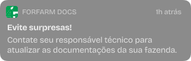
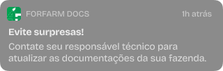

Simplifique a gestão da sua fazenda.
Com o ForFarmDocs, você pode ter todas as informações da sua fazenda na palma da sua mão.
Com o *Forfarm Docs*, você tem todas as informações da sua fazenda na palma da sua mão. Organize e acesse facilmente documentos importantes como licenças, relatórios e contratos. Nossa plataforma foi desenvolvida para tornar a gestão de documentos mais eficiente, eliminando a necessidade de papelada e reduzindo o tempo gasto com buscas e organização.

Nunca mais perca um prazo importante! O *Forfarm Docs* envia avisos e notificações diretamente para o seu WhatsApp e também dentro do aplicativo, lembrando você sobre vencimentos de licenças, prazos de renovação e outras obrigações essenciais para a sua fazenda. Esteja sempre um passo à frente com nossa funcionalidade de notificações inteligentes

Acompanhe a situação da sua fazenda em tempo real. Com o *Forfarm Docs*, você pode visualizar no mapa se a sua fazenda está embargada, facilitando a tomada de decisões e o planejamento de ações necessárias. A informação precisa e rápida que você precisa para manter sua fazenda regularizada.


Interface intuitiva e amigável, acessível a qualquer momento.
Reduza o tempo gasto com a gestão de documentos e aumente sua produtividade.
Seus documentos armazenados de forma segura e acessíveis apenas por você.
Acesse informações importantes da sua fazenda de qualquer lugar.

“Desde que comecei a usar o Forfarm Docs, a gestão dos documentos da minha fazenda nunca foi tão simples. As notificações me ajudam a não perder prazos importantes e o mapa de embargos é uma ferramenta essencial para mim.”
“Ter o Forfarm Docs foi uma das melhores decisões que tomei para a minha fazenda. A organização dos documentos e as notificações em tempo real me dão mais segurança e tranquilidade. Ferramenta indispensável!”
“Desde que comecei a usar o aplicativo, economizo muito tempo com a gestão de documentos. As notificações são um diferencial enorme e o suporte é excelente. Super recomendo!”
contato@forfarmdocs.com
© Todos os direitos reservados - FormFarmDocs
Desenvolvido por
 Gustavo Gonzaga
Gustavo Gonzaga


 

.png)
.png)
.png)
.png)

.webp)